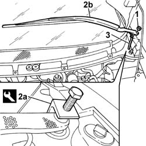

5050B34 WINDSCREEN WIPER ARM/S COMPLETE WITH BLADE - R+R
- Path
- Procedures > 50 AUXILIARY UNITS > 5050 SCREEN WASHERS AND HEADLAMP WASH/WIPE > 5050B WINDSCREEN WASH/WIPE > 5050B34 WINDSCREEN WIPER ARM/S COMPLETE WITH BLADE - R+R
- Kind
- repair procedure (removal / refitting; the operation number is the code)
- Applies to
- engines: 3.0 24V V6; all production periods
- Interactive page
- https://sloeber94.github.io/elrnDB-fUlss/en/#/179007504
Applies to: all engines; all production periods
 Removing
Removing
 Refitting
Refitting1. Undo the nut.
2. Remove the wiper arm (2b) using the tool (2a).
Description | Code | Function | |
|---|---|---|---|
2a | Extractor | Removing wiper arm |
3. Disconnect the pipe from the headlamp wash/wipe reservoir.

Applies to: all engines; all production periods
Refitting
RemovingPosition the wiper arm.
Connect the pipe from the headlamp wash/wipe reservoir.
Tighten the nut fixing the wiper arm.
Topics that link to this page (63)
- 1004B14 POWER UNIT WITH AUTOMATIC TRANSMISSION R + R
- 1008A46 POWER UNIT RIGID SUPPORT - TIMING SIDE - R.R.
- 1008C10 POWER UNIT UPPER SUPPORT - R R
- 1008C14 ENGINE LINK BRACKET - R R
- 1016C10 SINGLE CYLINDER HEAD - R.R. AND REPLACE GASKET
- 1016B10 SINGLE CAMSHAFT HOUSING - REPLACE GASKET
- 1016A34 RIGHT-HAND CAM COVER - R + R AND REPLACE GASKET
- 1020D14 FRONT CRANKSHAFT OIL SEAL COVER - R.R AND REPLACE SEALS FOR VERSIONS WITH OIL PUMP ON CRANKSHAFT, TIMING SIDE
- 1020D12 FRONT CRANK SHAFT OIL SEAL COVER - R + R AND REPLACE SEALS
- 1020D18 FRONT CRANK SHAFT COVER OIL SEAL - REPLACE
- 1032B10 TOOTHED TIMING BELT - R + R FOR TIMING ADJUSTMENT OR REPLACEMENT
- 1032B46 TOOTHED DRIVE PULLEY - R + R
- 1032B52 TOOTHED DRIVEN PULLEY (ONE) - R + R
- 1032C18 MOBILE TIMING SYSTEM TENSIONER - R + R FOR 24 VALVE ENGINES
- 1032C31 FIXED TIMING TENSIONER - R R
- 1032C32 FIXED TIMING SYSTEM TENSIONER (ONE) R + R
- 1032D12 TIMING SYSTEM PROTECTIVE COVER(S) - R + R
- 1036B50 CAMSHAFT FLYWHEEL - R.R.
- 1036C10 CAMSHAFTS IN CAMSHAFT HOUSING - R.R - INCLUDES CAMSHAFT HOUSING REPLACEMENT, IF NECESSARY
- 1036C39 TIMING VARIATOR ON CYLINDER HEAD INTAKE CAMSHAFT - R R
- 1036L10 CAMSHAFT IN CYLINDER HEAD - R R ON VEHICLE
- 1040B32 FUEL FILLER PIPE UNION SLEEVE - R + R
- 1056B62 L/H AND R/H FUEL PIPE ASSEMBLY - WITH INJECTORS - R + R
- 1056B67 R/H FUEL MANIFOLD PIPE, WITH INJECTORS - R + R
- 1056B70 INJECTOR (ONE) - R + R WITH FUEL MANIFOLD PIPE REMOVED - INCLUDES SEAL REPLACEMNT
- 1056B90 SYSTEM CABLE BUNDLE - R + R
- 1060F10 FUEL INJECTORS
- 1060F30 FUEL DELIVERY MANIFOLD - R R
- 1060F34 LINES TO INJECTORS - R R
- 1060F36 LINES TO INJECTORS - R R
- 1060E10 PRESSURE PUMP - R R
- 1060E30 PRESSURE PUMP PULLEY - R R
- 1060E40 SUPPLEMENTARY PRESSURE PUMP - R R
- 1064A19 TURBOCHARGER UNIT - EXHAUST MANIFOLD - COUPLING SLEEVE AND EXHAUST PIPES - R R
- 1072B10 INLET MANIFOLD - R + R AND REPLACE SEAL
- 1072B50 SLEEVES CONNECTING AIR CAPACITY BOX TO INLET MANIFOLD IS - R+R
- 1080B39 RIGHT CATALYTIC PRECONVERTER R R OR REPLACE CYLINDER HEAD GASKET
- 1080B93 RIGHT UPPER LAMBDA SENSOR R R
- 1080C80 EXHAUST GAS WATER HEAT EXCHANGER FOR EGR VALVE R R
- 1080D34 ENGINE OIL VAPOUR SEPARATOR - R + R
- 1088D34 RIGID PIPE/CONNECTOR (ONE) FOR ENGINE COOLING CIRCUIT - R.R.
- 1088D10 LOWER SLEEVE FOR COOLANT OUTLET FROM RADIATOR - R + R
- 1088D14 UPPER SLEEVE FOR COOLANT INLET TO RADIATOR - R + R
- 1088D32 <x>COOLANT MANIFOLD IN CYLINDER HEAD - R&R</x>
- 1088D53 RIGID SUPPLY OR RETURN PIPES FOR ENGINE OIL HEAT EXCHANGER - R.R.
- 1088B10 ENGINE COOLING TANK - R + R
- 1088B30 COOLANT LEVEL SENSOR - R.R.
- 1088C10 WATER PUMP - R + R
- 1088C30 THERMOSTAT UNIT - R+R
- 2130A38 AUTOMATIC TRANSMISSION FLUID HEAT EXCHANGER - R + R - INCLUDING LEVEL TOP UP IF NECESSARY
- 2130A10 AUTOMATIC TRANSMISSION - R + R
- 2130A40 COOLANT SUPPLY PIPE TO AUTOMATIC TRANSMISSION FLUID HEAT EXCHANGER - R.R.
- 2130B12 AUTOMATIC TRANSMISSION TORQUE CONVERTER - R+R
- 5050B32 WINDSCREEN WIPER ARM/S - R+R
- 5050B38 WINDSCREEN WIPER ASSEMBLY - R+R OR REPAIR
- 5040A54 PIPE FROM DEHYDRATING FILTER TO EXPANSION VALVE - R+R
- 5510C18 RIGHT HAND CYLINDER HEAD IGNITION COIL - R+R
- 5510C44 KNOCK SENSOR (ONE) - R+R
- 5510D10 SPARK PLUGS - R+R
- 5520C COLD STARTING SYSTEM (DIESEL ENGINES)
- 7035A18 WINDSCREEN GLASS R R INCLUDING CLEANING OF HOUSING
- 7055A18 L/H OR R/H SIDE RUBBING STRIP DECORATIVE SEAL - R+R
- 7210E22 WINDSCREEN BASE TRIM